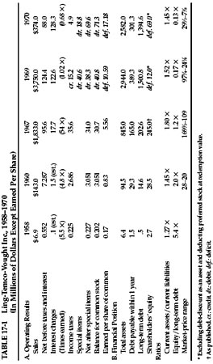

T he word “extremely” in the title is a kind of pun, because the histories represent extremes of various sorts that were manifest on Wall Street in recent years. They hold instruction, and grave warnings, for everyone who has a serious connection with the world of stocks and bonds—not only for ordinary investors and speculators but for professionals, security analysts, fund managers, trust-account administrators, and even for bankers who lend money to corporations. The four companies to be reviewed, and the different extremes that they illustrate are:
Penn Central (Railroad) Co. An extreme example of the neglect of the most elementary warning signals of financial weakness, by all those who had bonds or shares of this system under their supervision. A crazily high market price for the stock of a tottering giant.
Ling-Temco-Vought Inc. An extreme example of quick and unsound “empire building,” with ultimate collapse practically guaranteed; but helped by indiscriminate bank lending.
NVF Corp. An extreme example of one corporate acquisition, in which a small company absorbed another seven times its size, incurring a huge debt and employing some startling accounting devices.
AAA Enterprises. An extreme example of public stock-financing of a small company; its value based on the magic word “franchising,” and little else, sponsored by important stock-exchange houses. Bankruptcy followed within two years of the stock sale and the doubling of the initial inflated price in the heedless stock market.
The Penn Central Case
This is the country’s largest railroad in assets and gross revenues. Its bankruptcy in 1970 shocked the financial world. It has defaulted on most of its bond issues, and has been in danger of abandoning its operations entirely. Its security issues fell drastically in price, the common stock collapsing from a high level of 86½ as recently as 1968 to a low of 5½ in 1970. (There seems little doubt that these shares will be wiped out in reorganization.) *
Our basic point is that the application of the simplest rules of security analysis and the simplest standards of sound investment would have revealed the fundamental weakness of the Penn Central system long before its bankruptcy—certainly in 1968, when the shares were selling at their post-1929 record, and when most of its bond issues could have been exchanged at even prices for well-secured public-utility obligations with the same coupon rates. The following comments are in order:
1. In the S & P Bond Guide the interest charges of the system are shown to have been earned 1.91 times in 1967 and 1.98 times in 1968. The minimum coverage prescribed for railroad bonds in our textbook Security Analysis is 5 times before income taxes and 2.9 times after income taxes at regular rates. As far as we know the validity of these standards has never been questioned by any investment authority. On the basis of our requirements for earnings after taxes, the Penn Central fell short of the requirements for safety. But our after-tax requirement is based on a before-tax ratio of five times, with regular income tax deducted after the bond interest. In the case of Penn Central, it had been paying no income taxes to speak of for the past 11 years! Hence the coverage of its interest charges before taxes was less than two times—a totally inadequate figure against our conservative requirement of 5 times.
2. The fact that the company paid no income taxes over so long a period should have raised serious questions about the validity of its reported earnings.
3. The bonds of the Penn Central system could have been exchanged in 1968 and 1969, at no sacrifice of price or income, for far better secured issues. For example, in 1969, Pennsylvania RR 4½s, due 1994 (part of Penn Central) had a range of 61 to 74½, while Pennsylvania Electric Co. 4 3/8s, due 1994, had a range of 64¼ to 72¼. The public utility had earned its interest 4.20 times before taxes in 1968 against only 1.98 times for the Penn Central system; during 1969 the latter’s comparative showing grew steadily worse. An exchange of this sort was clearly called for, and it would have been a lifesaver for a Penn Central bondholder. (At the end of 1970 the railroad 4¼s were in default, and selling at only 18½, while the utility’s 4 3/8s closed at 66½.)
4. Penn Central reported earnings of $3.80 per share in 1968; its high price of 86½ in that year was 24 times such earnings. But any analyst worth his salt would have wondered how “real” were earnings of this sort reported without the necessity of paying any income taxes thereon.
5. For 1966 the newly merged company * had reported “earnings” of $6.80 a share—in reflection of which the common stock later rose to its peak of 86½. This was a valuation of over $2 billion for the equity. How many of these buyers knew at the time that the so lovely earnings were before a special charge of $275 million or $12 per share to be taken in 1971 for “costs and losses” incurred on the merger. O wondrous fairyland of Wall Street where a company can announce “profits” of $6.80 per share in one place and special “costs and losses” of $12 in another, and shareholders and speculators rub their hands with glee! †
6. A railroad analyst would have long since known that the operating picture of the Penn Central was very bad in comparison with the more profitable roads. For example, its transportation ratio was 47.5% in 1968 against 35.2% for its neighbor, Norfolk & Western. *
7. Along the way there were some strange transactions with peculiar accounting results. 1 Details are too complicated to go into here.
CONCLUSION : Whether better management could have saved the Penn Central bankruptcy may be arguable. But there is no doubt whatever that no bonds and no shares of the Penn Central system should have remained after 1968 at the latest in any securities account watched over by competent security analysts, fund managers, trust officers, or investment counsel. Moral: Security analysts should do their elementary jobs before they study stock-market movements, gaze into crystal balls, make elaborate mathematical calculations, or go on all-expense-paid field trips. †
Ling-Temco-Vought Inc.
This is a story of head-over-heels expansion and head-overheels debt, ending up in terrific losses and a host of financial problems. As usually happens in such cases, a fair-haired boy, or “young genius,” was chiefly responsible for both the creation of the great empire and its ignominious downfall; but there is plenty of blame to be accorded others as well. †
The rise and fall of Ling-Temco-Vought can be summarized by setting forth condensed income accounts and balance-sheet items for five years between 1958 and 1970. This is done in Table 17-1. The first column shows the company’s modest beginnings in 1958, when its sales were only $7 million. The next gives figures for 1960; the enterprise had grown twentyfold in only two years, but it was still comparatively small. Then came the heyday years to 1967 and 1968, in which sales again grew twentyfold to $2.8 billion with the debt figure expanding from $44 million to an awesome $1,653 million. In 1969 came new acquisitions, a further huge increase in debt (to a total of $1,865 million!), and the beginning of serious trouble. A large loss, after extraordinary items, was reported for the year; the stock price declined from its 1967 high of 169½ to a low of 24; the young genius was superseded as the head of the company. The 1970 results were even more dreadful. The enterprise reported a final net loss of close to $70 million; the stock fell away to a low price of 7 1/8, and its largest bond issue was quoted at one time at a pitiable 15 cents on the dollar. The company’s expansion policy was sharply reversed, various of its important interests were placed on the market, and some headway was made in reducing its mountainous obligations.
The figures in our table speak so eloquently that few comments are called for. But here are some:

1. The company’s expansion period was not without an interruption. In 1961 it showed a small operating deficit, but—adopting a practice that was to be seen later in so many reports for 1970—evidently decided to throw all possible charges and reserves into the one bad year. * These amounted to a round $13 million, which was more than the combined net profits of the preceding three years. It was now ready to show “record earnings” in 1962, etc.
2. At the end of 1966 the net tangible assets are given as $7.66 per share of common (adjusted for a 3-for-2 split). Thus the market price in 1967 reached 22 times (!) its reported asset value at the time. At the end of 1968 the balance sheet showed $286 million available for 3,800,000 shares of common and Class AA stock, or about $77 per share. But if we deduct the preferred stock at full value and exclude the good-will items and the huge bond-discount “asset,” † there would remain $13 million for the common—a mere $3 per share. This tangible equity was wiped out by the losses of the following years.
3. Toward the end of 1967 two of our best-regarded banking firms offered 600,000 shares of Ling-Temco-Vought stock at $111 per share. It had been as high as 169½. In less than three years the price fell to 7 1/8. †
4. At the end of 1967 the bank loans had reached $161 million, and a year later they stood at $414 million—which should have been a frightening figure. In addition, the long-term debt amounted to $1,237 million. By 1969 combined debt reached a total of $1,869 million. This may have been the largest combined debt figure of any industrial company anywhere and at any time, with the single exception of the impregnable Standard Oil of N.J.
5. The losses in 1969 and 1970 far exceeded the total profits since the formation of the company.
MORAL : The primary question raised in our mind by the Ling-Temco-Vought story is how the commercial bankers could have been persuaded to lend the company such huge amounts of money during its expansion period. In 1966 and earlier the company’s coverage of interest charges did not meet conservative standards, and the same was true of the ratio of current assets to current liabilities and of stock equity to total debt. But in the next two years the banks advanced the enterprise nearly $400 million additional for further “diversification.” This was not good business for them, and it was worse in its implications for the company’s shareholders. If the Ling-Temco-Vought case will serve to keep commercial banks from aiding and abetting unsound expansions of this type in the future, some good may come of it at last. *
The NVF Takeover of Sharon Steel (A Collector’s Item)
At the end of 1968 NVF Company was a company with $4.6 million of long-term debt, $17.4 million of stock capital, $31 million of sales, and $502,000 of net income (before a special credit of $374,000). Its business was described as “vulcanized fiber and plastics.” The management decided to take over the Sharon Steel Corp., which had $43 million of long-term debt, $101 million of stock capital, $219 million of sales, and $2,929,000 of net earnings. The company it wished to acquire was thus seven times the size of NVF. In early 1969 it made an offer for all the shares of Sharon. The terms per share were $70 face amount of NVF junior 5% bonds, due 1994, plus warrants to buy 1½ shares of NVF stock at $22 per share of NVF. The management of Sharon strenuously resisted this takeover attempt, but in vain. NVF acquired 88% of the Sharon stock under the offer, issuing therefore $102 million of its 5% bonds and warrants for 2,197,000 of its shares. Had the offer been 100% operative the consolidated enterprise would, for the year 1968, have had $163 million in debt, only $2.2 million in tangible stock capital, $250 million of sales. The net-earnings question would have been a bit complicated, but the company subsequently stated them as a net loss of 50 cents per share of NVF stocks, before an extraordinary credit, and net earnings of 3 cents per share after such credit. *
FIRST COMMENT : Among all the takeovers effected in the year 1969 this was no doubt the most extreme in its financial disproportions. The acquiring company had assumed responsibility for a new and top-heavy debt obligation, and it had changed its calculated 1968 earnings from a profit to a loss into the bargain. A measure of the impairment of the company’s financial position by this step is found in the fact that the new 5% bonds did not sell higher than 42 cents on the dollar during the year of issuance. This would have indicated grave doubt of the safety of the bonds and of the company’s future; however, the management actually exploited the bond price in a way to save the company annual income taxes of about $1,000,000 as will be shown.
The 1968 report, published after the Sharon takeover, contained a condensed picture of its results, carried back to the year-end. This contained two most unusual items:
1. There is listed as an asset $58,600,000 of “deferred debt expense.” This sum is greater than the entire “stockholders’ equity,” placed at $40,200,000.
2. However, not included in the shareholders’ equity is an item of $20,700,000 designated as “excess of equity over cost of investment in Sharon.”
SECOND COMMENT : If we eliminate the debt expense as an asset, which it hardly seems to be, and include the other item in the shareholders’ equity (where it would normally belong), then we have a more realistic statement of tangible equity for NVF stock, viz., $2,200,000. Thus the first effect of the deal was to reduce NVF’s “real equity” from $17,400,000 to $2,200,000 or from $23.71 per share to about $3 per share, on 731,000 shares. In addition the NVF shareholders had given to others the right to buy 3½ times as many additional shares at six points below the market price at the close of 1968. The initial market value of the warrants was then about $12 each, or a total of some $30 million for those involved in the purchase offer. Actually, the market value of the warrants well exceeded the total market value of the outstanding NVF stock—another evidence of the tail-wagging-dog nature of the transaction.
The Accounting Gimmicks
When we pass from this pro forma balance sheet to the next year’s report we find several strange-appearing entries. In addition to the basic interest expense (a hefty $7,500,000), there is deducted $1,795,000 for “amortization of deferred debt expense.” But this last is nearly offset on the next line by a very unusual income item indeed: “amortization of equity over cost of investment in subsidiary: Cr. $1,650,000.” In one of the footnotes we find an entry, not appearing in any other report that we know of: Part of the stock capital is there designated as “fair market value of warrants issued in connection with acquisition, etc., $22,129,000.”
What on earth do all these entries mean? None of them is even referred to in the descriptive text of the 1969 report. The trained security analyst has to figure out these mysteries by himself, almost in detective fashion. He finds that the underlying idea is to derive a tax advantage from the low initial price of the 5% debentures. For readers who may be interested in this ingenious arrangement we set forth our solution in Appendix 6.
Other Unusual Items
1. Right after the close of 1969 the company bought in no less than 650,000 warrants at a price of $9.38 each. This was extraordinary when we consider that ( a ) NVF itself had only $700,000 in cash at the year-end, and had $4,400,000 of debt due in 1970 (evidently the $6 million paid for the warrants had to be borrowed); ( b ) it was buying in this warrant “paper money” at a time when its 5% bonds were selling at less than 40 cents on the dollar—ordinarily a warning that financial difficulties lay ahead.
2. As a partial offset to this, the company had retired $5,100,000 of its bonds along with 253,000 warrants in exchange for a like amount of common stock. This was possible because, by the vagaries of the securities markets, people were selling the 5% bonds at less than 40 while the common sold at an average price of 13½, paying no dividend.
3. The company had plans in operation not only for selling stock to its employees, but also for selling them a larger number of warrants to buy the stock. Like the stock purchases the warrants were to be paid for 5% down and the rest over many years in the future. This is the only such employee-purchase plan for warrants that we know of. Will someone soon invent and sell on installments a right to buy a right to buy a share, and so on?
4. In the year 1969 the newly controlled Sharon Steel Co. changed its method of arriving at its pension costs, and also adopted lower depreciation rates. These accounting changes added about $1 per share to the reported earnings of NVF before dilution.
5. At the end of 1970 Standard & Poor’s Stock Guide reported that NVF shares were selling at a price/earning ratio of only 2, the lowest figure for all the 4,500-odd issues in the booklet. As the old Wall Street saying went, this was “important if true.” The ratio was based on the year’s closing price of 8 3/4 and the computed “earnings” of $5.38 per share for the 12 months ended September 1970. (Using these figures the shares were selling at only 1.6 times earnings.) But this ratio did not allow for the large dilution factor, * nor for the adverse results actually realized in the last quarter of 1970. When the full year’s figures finally appeared, they showed only $2.03 per share earned for the stock, before allowing for dilution, and $1.80 per share on a diluted basis. Note also that the aggregate market price of the stock and warrants on that date was about $14 million against a bonded debt of $135 million—a skimpy equity position indeed.
AAA Enterprises
History
About 15 years ago a college student named Williams began selling mobile homes (then called “trailers”). † In 1965 he incorporated his business. In that year he sold $5,800,000 of mobile homes and earned $61,000 before corporate tax. By 1968 he had joined the “franchising” movement and was selling others the right to sell mobile homes under his business name. He also conceived the bright idea of going into the business of preparing income-tax returns, using his mobile homes as offices. He formed a subsidiary company called Mr. Tax of America, and of course started to sell franchises to others to use the idea and the name. He multiplied the number of corporate shares to 2,710,000 and was ready for a stock offering. He found that one of our largest stock-exchange houses, along with others, was willing to handle the deal. In March 1969 they offered the public 500,000 shares of AAA Enterprises at $13 per share. Of these, 300,000 were sold for Mr. Williams’s personal account and 200,000 were sold for the company account, adding $2,400,000 to its resources. The price of the stock promptly doubled to 28, or a value of $84 million for the equity, against a book value of, say, $4,200,000 and maximum reported earnings of $690,000. The stock was thus selling at a tidy 115 times its current (and largest) earnings per share. No doubt Mr. Williams had selected the name AAA Enterprise so that it might be among the first in the phone books and the yellow pages. A collateral result was that his company was destined to appear as the first name in Standard & Poor’s Stock Guide. Like Abu-Ben-Adhem’s, it led all the rest. * This gives a special reason to select it as a harrowing example of 1969 new financing and “hot issues.”
COMMENT : This was not a bad deal for Mr. Williams. The 300,000 shares he sold had a book value in December of 1968 of $180,000 and he netted therefor 20 times as much, or a cool $3,600,000. The underwriters and distributors split $500,000 between them, less expenses.
1. This did not seem so brilliant a deal for the clients of the selling houses. They were asked to pay about ten times the book value of the stock, after the bootstrap operation of increasing their equity per share from 59 cents to $1.35 with their own money. * Before the best year 1968, the company’s maximum earnings had been a ridiculous 7 cents per share. There were ambitious plans for the future, of course—but the public was being asked to pay heavily in advance for the hoped-for realization of these plans.
2. Nonetheless, the price of the stock doubled soon after original issuance, and any one of the brokerage-house clients could have gotten out at a handsome profit. Did this fact alter the flotation, or did the advance possibility that it might happen exonerate the original distributors of the issue from responsibility for this public offering and its later sequel? Not an easy question to answer, but it deserves careful consideration by Wall Street and the government regulatory agencies. †
Subsequent History
With its enlarged capital AAA Enterprises went into two additional businesses. In 1969 it opened a chain of retail carpet stores, and it acquired a plant that manufactured mobile homes. The results reported for the first nine months were not exactly brilliant, but they were a little better than the year before—22 cents a share against 14 cents. What happened in the next months was literally incredible. The company lost $4,365,000, or $1.49 per share. This consumed all its capital before the financing, plus the entire $2,400,000 received on the sale of stock plus two-thirds of the amount reported as earned in the first nine months of 1969. There was left a pathetic $242,000, or 8 cents per share, of capital for the public shareholders who had paid $13 for the new offering only seven months before. Nonetheless the shares closed the year 1969 at 8 1/8 bid, or a “valuation” of more than $25 million for the company.
FURTHER COMMENT : 1. It is too much to believe that the company had actually earned $686,000 from January to September 1969 and then lost $4,365,000 in the next three months. There was something sadly, badly, and accusingly wrong about the September 30 report.
2. The year’s closing price of 8 1/8 bid was even more of a demonstration of the complete heedlessness of stock-market prices than were the original offering price of 13 or the subsequent “hot-issue” advance to a high bid of 28. These latter quotations at least were based on enthusiasm and hope—out of all proportion to reality and common sense, but at least comprehensible. The year-end valuation of $25 million was given to a company that had lost all but a minuscule remnant of its capital, for which a completely insolvent condition was imminent, and for which the words “enthusiasm” or “hope” would be only bitter sarcasms. (It is true the year-end figures had not been published by December 31, but it is the business of Wall Street houses associated with a company to have monthly operating statements and a fairly exact idea of how things are going.)
Final Chapter
For the first half of 1970 the company reported a further loss of $1 million. It now had a good-sized capital deficit. It was kept out of bankruptcy by loans made by Mr. Williams, up to a total of $2,500,000. No further statements seem to have been issued, until in January 1971 AAA Enterprises finally filed a petition in bankruptcy. The quotation for the stock at month-end was still 50 cents a share bid, or $1,500,000 for the entire issue, which evidently had no more than wallpaper value. End of our story.
MORAL AND QUESTIONS : The speculative public is incorrigible. In financial terms it cannot count beyond 3. It will buy anything, at any price, if there seems to be some “action” in progress. It will fall for any company identified with “franchising,” computers, electronics, science, technology, or what have you, when the particular fashion is raging. Our readers, sensible investors all, are of course above such foolishness. But questions remain: Should not responsible investment houses be honor-bound to refrain from identifying themselves with such enterprises, nine out of ten of which may be foredoomed to ultimate failure? (This was actually the situation when the author entered Wall Street in 1914. By comparison it would seem that the ethical standards of the “Street” have fallen rather than advanced in the ensuing 57 years, despite all the reforms and all the controls.) Could and should the SEC be given other powers to protect the public, beyond the present ones which are limited to requiring the printing of all important relevant facts in the offering prospectus? Should some kind of box score for public offerings of various types be compiled and published in conspicuous fashion? Should every prospectus, and perhaps every confirmation of sale under an original offering, carry some kind of formal warranty that the offering price for the issue is not substantially out of line with the ruling prices for issues of the same general type already established in the market? As we write this edition a movement toward reform of Wall Street abuses is under way. It will be difficult to impose worthwhile changes in the field of new offerings, because the abuses are so largely the result of the public’s own heedlessness and greed. But the matter deserves long and careful consideration. *